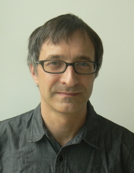

| HOME | CURRICULUM VITAE | PUBLICATIONS | RESEARCH |
|  |
Directeur de Recherche
Centre National de la Recherche Scientifique Mailing address: Laboratoire Lagrange Observatoire de la Côte d'Azur B.P. 4229 06304 Nice Cedex 4, France Office: Route de l'Observatoire, Pavillon Henri Chrétien [directions] [Google] Email: mark.wieczorek@oca.eu web: www.oca.eu/fr/mark-wieczorek |
Research Interests
My scientific research focuses on deciphering the interior structure and geologic evolution of the terrestrial planets. Much of this work makes use of planetary topography, gravity, and magnetic field data that have been acquired from orbiting spacecraft, combined with remote sensing data and impact crater formation models. I have worked with several lunar missions, including the orbiting SMART-1 and Chandrayaan-1 X-ray fluorescence spectrometers, and NASA's lunar gravity mapping mission GRAIL. Currently, I am a co-investigator of NASA's upcoming geophysical mission to Mars, Insight, and the laser altimeters on ESA's BepiColombo mission to Mercury and JUICE mission to Ganymede.
Since 2017, I have been at the Laboratoire Lagrange as a member of the research group Théories et Observations en Planétologie. Prior to this, I was the leader of the Planetary and Space Sciences group at the Institut de Physique du Globe de Paris, and from 2011-2015, I was also the editor-in-chief of the Journal of Geophysical Research Planets. In addition to my scientific activities, I am the lead developer of the SHTOOLS software package that is used for analyzing global data expressed in spherical harmonics.
Projects and links
SHTOOLS: Tools for working with spherical harmonics
An archive of Fortran 95 and Python software for working with data expressed in spherical harmonics.
Spherical Harmonic Models of Planetary Topography
Spherical harmonic shape models of the Moon, Mars, and Venus.
GRAIL Crustal Thickness Archive
An archive of crustal thickness maps of the Moon derived from GRAIL gravity data.
Master, Ph.D. and Postdoc Positions
If you are interested in doing a Master, Ph.D., or Post-doc in planetary geophysics, please contact me!
| Laboratoire Lagrange | Observatoire de la Côte d'Azur | L’Université de Nice-Sophia Antipolis |